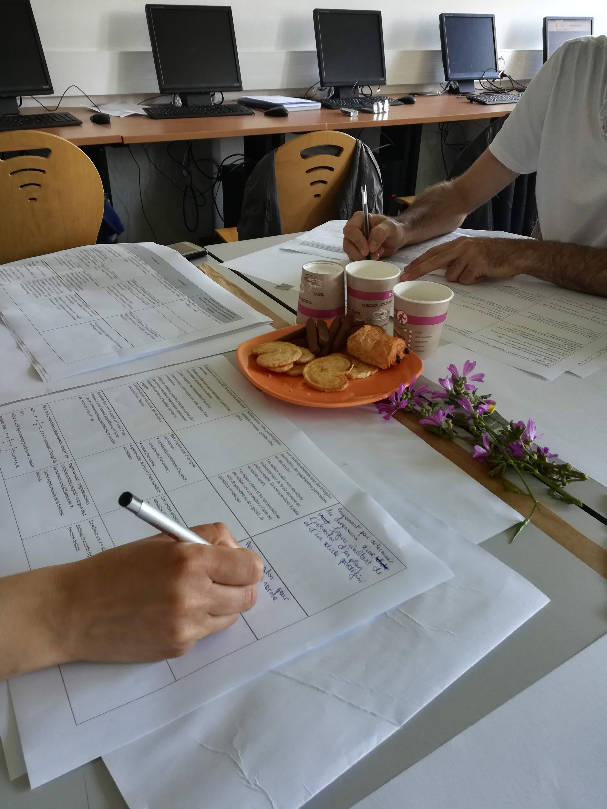
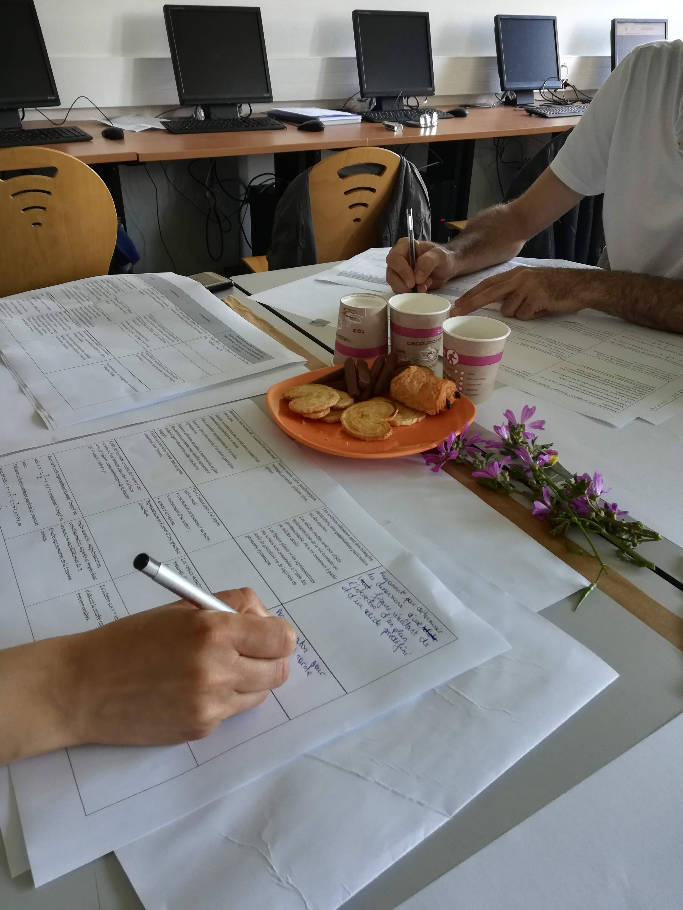
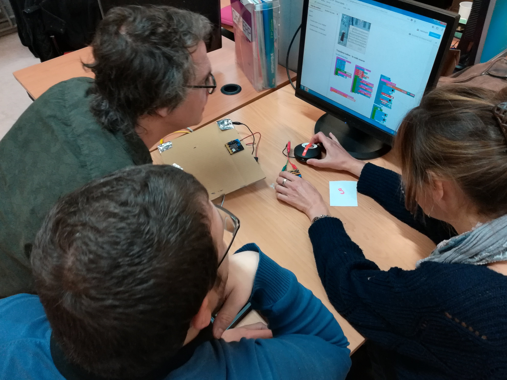
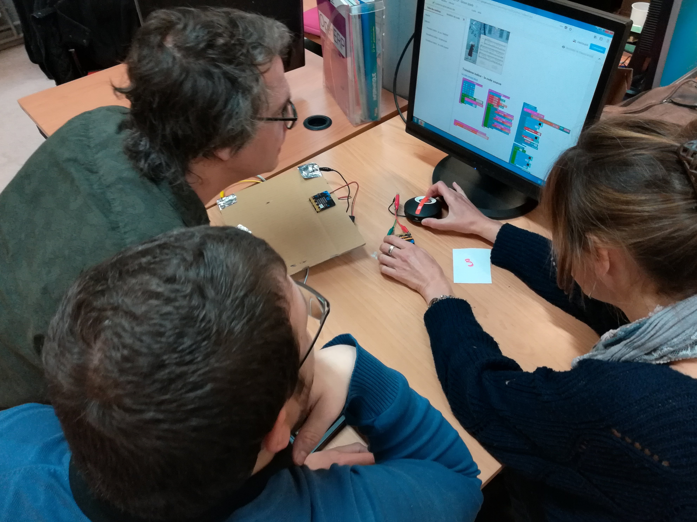
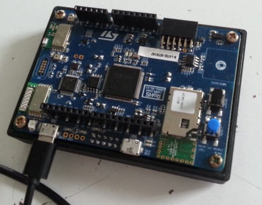
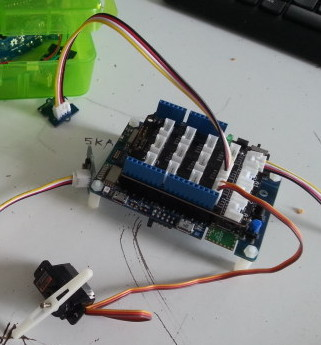
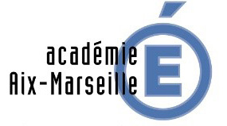

Groupe InEFLP
Innovation Expérimentation et Formation en Lycée Professionnel
Thèmes de travail, année 2017/2018
Présentation du groupe
groupe InEFLP
Innovation Expérimentation et Formation en Lycée Professionnel
- 8 enseignants PLP Maths/Sciences (2017/2018)
groupe InEFLP
Centres d’intérêts du groupe
- Innovation
Formes scolaires innovantes
- Expérimentation
Micro-contrôleur
- Formation
Algorithme
Innovation
Formes scolaires
Moodle
C’est quoi ?
- plateforme d’apprentissage en ligne LMS
- depuis 2002
- équivalent à Chamilo, Claroline, M@gistère, Dokeos, Wims, etc.
Moodle
Ça sert à quoi ?
- diffuser du contenu
- suivre l’activité des élèves
- récupérer des productions
- automatiser certaines tâches comme la notation ou le feedback
Moodle
Quoi de nouveau alors ?
- intégration à l’ENT académique Atrium
- parc informatique : PC & tablettes
- accès à internet pour tous
- en classe
- hors classe
S’approprier Moodle
- prise en main depuis septembre 2017
- création de ressources
Analyser Moodle
Utile
- point d’entré unique pour diffuser et suivre l’activité
- élèves en activités, mobilisés, concentrés
- évaluations formatives
- intégration de médias variés
- accès hors temps scolaire
Analyser Moodle
Utilisable
- contraintes matérielles fortes
- parc informatique entièrement fonctionnel
- accès internet pour les élèves dans toutes les salles
- chronophage en amont
- outil riche et donc complexe
Diffuser Moodle
http://url.univ-irem.fr/moodle
Moodle - Perspectives
Intégration de nouveaux membres :
- 2 enseignantes travaillant sur Chamilo
- réalisation et mutualisation de ressources (vidéos)
- recherche d’une structure, d’une organisation pertinente des activités/ressources
- 1 enseignante travaillant sur les compétences
- moodle et les 5 compétences en maths/sciences
- 2 enseignantes travaillant sur le travail par groupe
- articulation individus/numérique vs. groupes/îlots
Formation
Algorithmique
Stage Algo
- Stage mis en place par les IEN MSPC
- 2017-2018 :
- 3×2 journées pour les PLP MSPC
- 2×1 journée pour les PE enseignant en SEGPA
- Public hétérogène
Informatique branchée et débranchée
 

Réflexion et travail par groupes


De la programmation par blocs
 

Des stagiaires perplexes


Des objets connectés


Micro:bit
Expérimentation
Micro-contrôleur
Micro:Bit
C’est quoi ?
Une carte à l’initiative de la BBC pour équiper tous les collégiens anglais.
Un petit objet robuste programmable par un enfant de 10 ans
De grandes possibilités d’interactions avec l’environnement.
Micro:Bit
Pour quoi faire ?
- aborder la partie algorithmique du cycle4 (3ème Prépa-Pro)
- initier les élèves à la programmation en AP
- réaliser des projets incluant un objet programmable
- aborder des notions de mathématiques du programme de BAC Pro
Micro:Bit
- interface en ligne https://makecode.microbit.org/
- programmation par bloc ou en javascript
- simulateur
Micro:Bit
Comment ?
STMicroelectronics
STMicroelectronics est en train de développer sa carte de prototypage pour l’éducation.
STM32 Education
Partenariat avec l’académie d’Aix-Marseille : Promotion de l’électronique, du numérique et du codage.
2017/2018 : 1ère phase de test en cours sur un prototype.
  
STM32 conseil

Merci
Groupe InEFLP
Innovation
Formes scolaires innovantes
Expérimentation
Micro-contrôleur
Formation
Algorithme